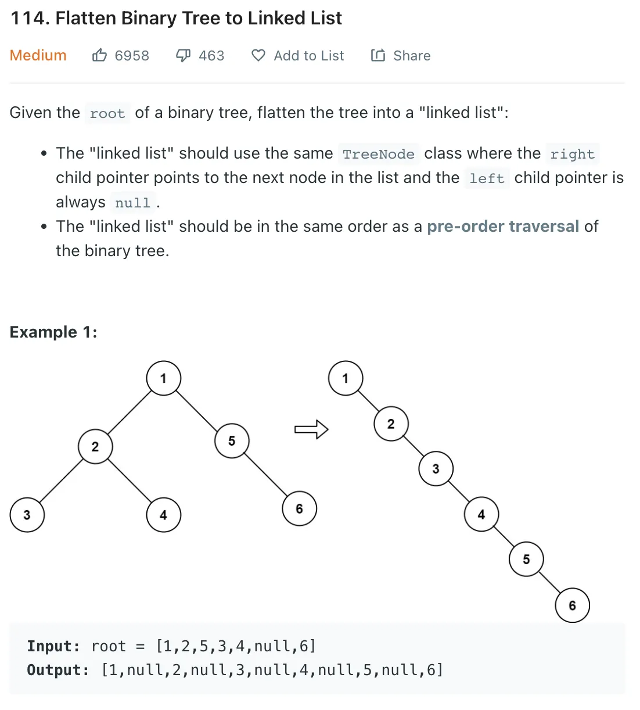
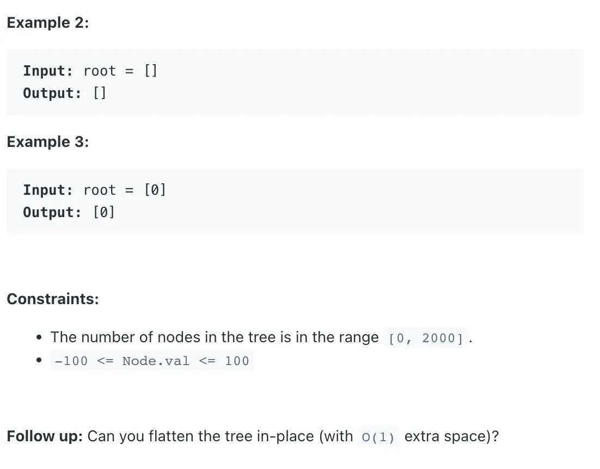

114. Flatten Binary Tree to Linked List
Question


✍🏽 My Solution
Runtime: 1 ms, faster than 68.31% of Java online submissions for Flatten Binary Tree to Linked List. Memory Usage: 43.3 MB, less than 9.71% of Java online submissions for Flatten Binary Tree to Linked List.
class Solution {
private TreeNode dummy = new TreeNode();
private TreeNode tail = dummy;
public void flatten(TreeNode root) {
preorder(root);
}
private void preorder(TreeNode root) {
if (root == null) return;
// 暫存節點
TreeNode left = root.left;
TreeNode right = root.right;
// 把遍歷到的節點放到結果鏈表中
tail.right = root;
tail = root;
root.left = null;
// 左子樹
preorder(left);
// 右子樹
preorder(right);
}
}
🧠 Thought Process
- Why did I choose this particular implementation?
- 王爭 遞歸
- 建立虛擬頭節點跟tail指針
- 遞歸終止條件：root == null
- 先暫存 root.left 跟 root.right
- 前序遍歷
- tail 的 右節點指向 root
- 遍歷左節點
- 遍歷右節點
- What is the time/space complexity of my solution? How do I know?
- time: O(n)
- space: O(h)
Solution #2 [非遞歸-要學會這個]
class Solution {
public void flatten(TreeNode root) {
TreeNode cur = root;
while (cur != null) {
if (cur.left != null) {
TreeNode last = cur.left;
while (last.right != null) {
last = last.right;
}
last.right = cur.right;
cur.right = cur.left;
cur.left = null;
}
cur = cur.right;
}
}
}
Explanation (in my words)
- How does their solution work?
- 這個思路不好想到
- 问题转化成：找左子樹的最右節點。
- 對於當前節點
cur，如果其左子節點不為空，則在其左子樹中找到最右邊的節點，作為last節點。 - 將
cur節點的右子節點賦給last節點的右子節點，然後將cur節點的左子節點賦給cur節點的右子節點，並將cur節點的左子節點設為 null。 - 對當前節點處理結束後，繼續處理鏈表中的下一個節點，直到所有節點都處理結束。
- What is the space/time complexity of their solution?
- time: O(n)
- space: O(1)
Solution #1 [王爭-遞歸]
Runtime: 1 ms, faster than 68.31% of Java online submissions for Flatten Binary Tree to Linked List. Memory Usage: 43.3 MB, less than 9.71% of Java online submissions for Flatten Binary Tree to Linked List.
class Solution {
private TreeNode dummyHead = new TreeNode();
private TreeNode tail = dummyHead;
public void flatten(TreeNode root) {
preorder(root);
}
private void preorder(TreeNode root) {
if (root == null) return;
TreeNode left = root.left; // 相當tmp node，會丟失
TreeNode right = root.right; // 相當tmp node，會丟失
// 把遍歷到的節點放到結果鏈表中
tail.right = root; // right相當於next指針
tail = root;
root.left = null; // left為null才會像是鏈表
// 左子樹
preorder(left);
// 右子樹
preorder(right);
}
}